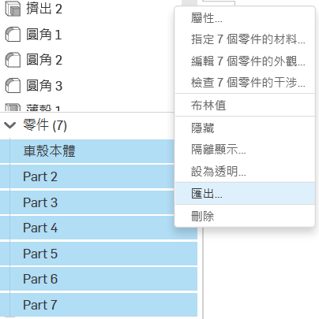

Project One <<
Previous Next >> CoppeliaSim
onshape
線上免費3D建模平台，隨時隨地即可將腦中的想法實作出來‧
第一版模型
W7 利用onshape開始建立模型
網際3D建模平台完成遠距協同模型開發建立製作!
模型參考圖
第二版模型
模型參考圖
本次修改主要修正為輪軸分離設計，修改邊角銳利，以及新增尾翼‧
使用onshape進行轉檔匯出步驟
1.開啟模型編輯
2.選取右下方零件(欲匯出的零件)

3.點選滑鼠右鍵顯示工具列->選用匯出

4.點選後會出現一些功能選項根據需要選取
5.能匯出的檔案類型有:
WebGL
WebGL是一種JavaScript API，用於在不使用外掛程式的情況下在任何相容的網頁瀏覽器中呈現互動式2D和3D圖形。WebGL完全整合到瀏覽器的所有網頁標準中，可將影像處理和效果的GPU加速使用方式當做網頁Canvas的一部分。WebGL元素可以加入其他HTML元素之中並與網頁或網頁背景的其他部分混合。WebGL程式由JavaScript編寫的控制代碼和OpenGL Shading Language（GLSL）編寫的著色器代碼組成，該語言類似於C或C++，並在電腦的圖形處理器（GPU）上執行。WebGL由非營利Khronos Group設計和維護。
資料來源:https://zh.wikipedia.org/zh-tw/WebGL
Project One <<
Previous Next >> CoppeliaSim
Copyright © All rights reserved | This template is made with by Colorlib